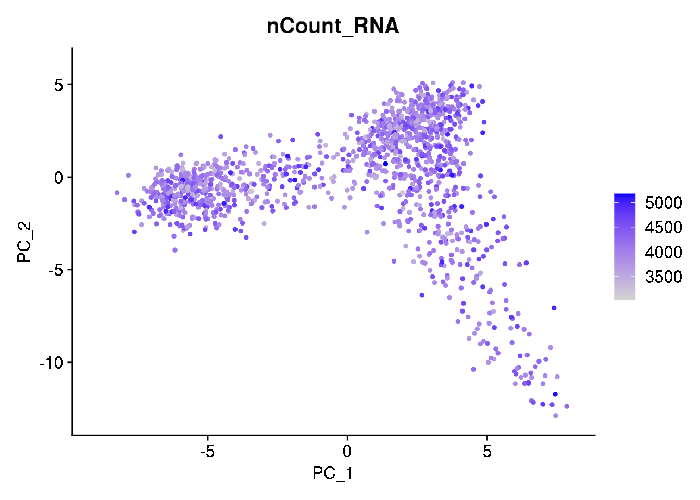
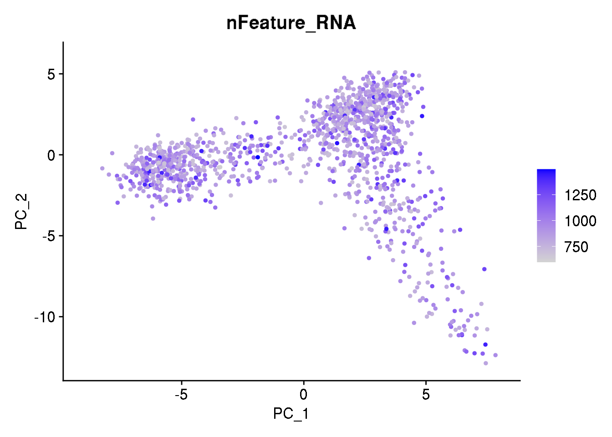
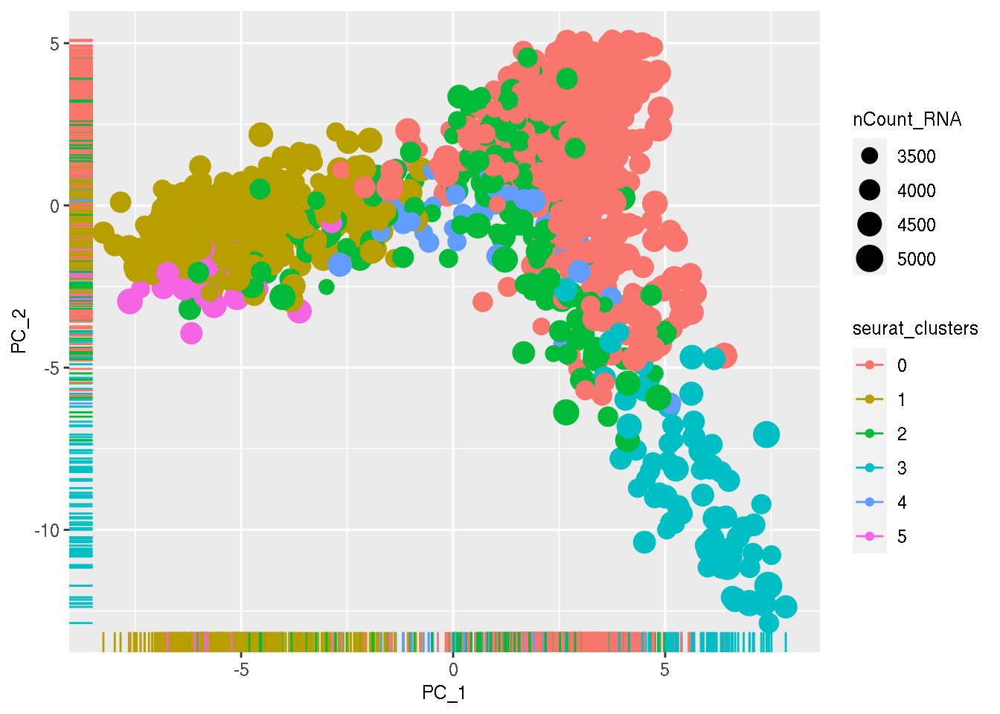
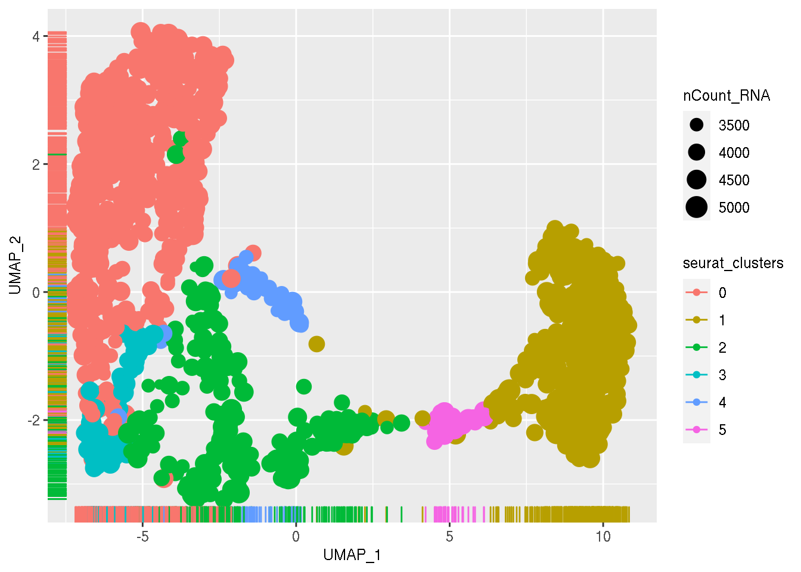

4 Group discussion
- How could you identify the genes specifically expressed in one cluster ?
- Play with the colors of the plots. How much can this impact the resulting UMAP ?
- Try to find genes that are co-expressed (or anti-correlated) in this dataset.
4.1 Interpretation PC axes
4.1.1 Link with nUMI and nFeature
# Add PCs coordinates as a metadata
dataset <- AddMetaData(dataset, dataset@reductions$pca@cell.embeddings, colnames(dataset@reductions$pca@cell.embeddings))
# Add UMAP coordinates as a metadata
dataset <- AddMetaData(dataset, dataset@reductions$umap@cell.embeddings, colnames(dataset@reductions$umap@cell.embeddings))
# Check you have the PC aggregated to the metadata
head(dataset[[]])[1:10]## orig.ident nCount_RNA nFeature_RNA RNA_snn_res.0.4
## GTACTAATTACN_2 SeuratProject 5056.723 1445 2
## AGGCTAATGGAC_3 SeuratProject 4711.185 1241 0
## TAGACAAAAGCT_4 SeuratProject 4727.516 1155 1
## TCTACTAGTGTN_5 SeuratProject 4561.512 1105 2
## CCGTGCTGAACA_3 SeuratProject 4569.284 1138 0
## GAGAAAATGAAG_7 SeuratProject 4528.382 1078 1
## seurat_clusters PC_1 PC_2 PC_3 PC_4
## GTACTAATTACN_2 2 0.8901358 1.7567252 -2.6676502 5.054322
## AGGCTAATGGAC_3 0 2.0935612 2.6764714 -1.2593752 1.026615
## TAGACAAAAGCT_4 1 -2.0516447 -0.1691875 2.3202232 4.824665
## TCTACTAGTGTN_5 2 0.8153851 1.6728201 -5.6104631 2.608583
## CCGTGCTGAACA_3 0 -1.0697989 2.3039091 2.9484302 1.376591
## GAGAAAATGAAG_7 1 -1.1697802 0.1742288 0.9408307 1.676755
## PC_5
## GTACTAATTACN_2 0.33856502
## AGGCTAATGGAC_3 0.31540995
## TAGACAAAAGCT_4 0.01278697
## TCTACTAGTGTN_5 -0.50347780
## CCGTGCTGAACA_3 0.08532385
## GAGAAAATGAAG_7 -2.77752873

ggplot(dataset[[]],
aes(x=PC_1, y=PC_2, color = seurat_clusters)) +
geom_point(aes(size = nCount_RNA)) +
geom_rug()
ggplot(dataset[[]],
aes(x=UMAP_1, y=UMAP_2, color = seurat_clusters)) +
geom_point(aes(size = nCount_RNA)) +
geom_rug()
# Extract PC gene loadings for the 10 first components
PC_df <- dataset@reductions$pca@feature.loadings[,1:10]# Select PC to work with
nPC <- 1
# Select highest 5 genes in PC1
list_topVarPC1_plus <- sort(PC_df[,paste0('PC_', nPC)], decreasing = TRUE)[1:5]
list_topVarPC1_minus <- sort(PC_df[,paste0('PC_', nPC)], decreasing = FALSE)[1:5]
list_topVarPC1_plus## Ptr sdt aop 5-HT2A veil
## 0.2041575 0.1794579 0.1573053 0.1562678 0.1454172## twi ventrally-expressed-protein-D
## -0.2207021 -0.2158339
## sna stumps
## -0.2152931 -0.2063053
## zfh1
## -0.20510814.1.2 Enrichement
CallGroupGo = function(list_genes){
# groupGO return the GO profile at a specific level·
eg = bitr(list_genes, fromType="SYMBOL", toType=c("FLYBASE","ENTREZID"), OrgDb="org.Dm.eg.db")
# copy to clipboard for comparison with online app
#write_clip(list_topVarPC1)
ggo <- groupGO(gene = na.omit(eg$ENTREZID),
OrgDb = org.Dm.eg.db,
ont = "BP",
level = 3,
readable = TRUE)
return(ggo)
}
CallEnrichGo = function(list_genes,pval,qval){
#return the enrichment GO categories after FDR control.·
eg = bitr(list_genes, fromType="SYMBOL", toType=c("FLYBASE","ENTREZID"), OrgDb="org.Dm.eg.db")
ego <- enrichGO(gene = na.omit(eg$ENTREZID),
OrgDb = org.Dm.eg.db,
ont = "BP",
pAdjustMethod = "BH",
pvalueCutoff = pval,
qvalueCutoff = qval,
readable = TRUE)
return(ego)
}
CallKeggPath = function(list_genes){
#return the enrichment GO categories after FDR control.·
eg = bitr(list_genes, fromType="SYMBOL", toType=c("FLYBASE","ENTREZID"), OrgDb="org.Dm.eg.db")
kk<- enrichKEGG(gene = na.omit(eg$ENTREZID),
organism = org.Dm.eg.db,
pvalueCutoff = 0.01,
use_internal_data = TRUE)
return(kk)
}ego1p = CallEnrichGo(list_topVarPC1_plus,0.01,0.05)
ego1m = CallEnrichGo(list_topVarPC1_minus,0.01,0.05)
ego2 = CallEnrichGo(list_topVarPC2,0.02,0.15)
ego2p = CallEnrichGo(list_topVarPC2_plus,0.01,0.05)
ego2m = CallEnrichGo(list_topVarPC2_minus,0.01,0.05)
ego3 = CallEnrichGo(list_topVarPC3,0.02,0.15)
ego3p = CallEnrichGo(list_topVarPC3_plus,0.01,0.05)
ego3m = CallEnrichGo(list_topVarPC3_minus,0.01,0.05)